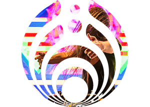

Aidan's Website!

About Aidan
My name is Aidan Murphy. I am born and raised in Suwanee, Georgia and I am majoring in Computer Science. I am pursuing a career in software development and I am currently employed as a Software Engineering intern at Pegasystems. I am taking this class in order to broaden my knowledge on internet programming. My hobbies include playing soccer, going hiking and camping, hanging out with friends and listening to music. BASSNECTAR!!!!
Aidan's Cars
If you know me you know I love cars. I got my first Jeep at age 15 and fell in love immediately. I began putting modifications on it left and right, spending every cent I made on more Jeep parts. It is a 1998 Jeep Cherokee and unfortunately is not running currently.
Aidan's Hobbies
Although I don't have much free time for hobbies due to a 30 hour work week combined with 21 credit hours of classes, I still like to relax and enjoy myself.
One of my favorite things to do is listen to music, in my day to day life it feels like something is missing if I'm not listening to music. Of course I still like the occasional peace and quiet, but the way I see it music is a soundtrack to your life and can change your mood and help you keep a positive attitude throughout the day. My favorite music artist is Bassnectar, who produces a variety of music to very heavy bass music to extremely melodic and emotional pieces. I am obsessed with seeing him in person and have seen him over 7 times.. and that number will continue to grow!
I am also a huge fan of the outdoors. I love the mountains more than anywhere else, and I wish I could fill every weekend with camping and hiking until I can't take any more. I have been to most mountains in GA and been to countless campsites, however, I really want to explore the country and the world and camp along the way
In addition to being outside, like any other CS major I love video games. My favorite genre of game is RPGs by far. The Witcher 3 is my favorite game of all time and I am currently playing through Red Dead Redemption 2.
